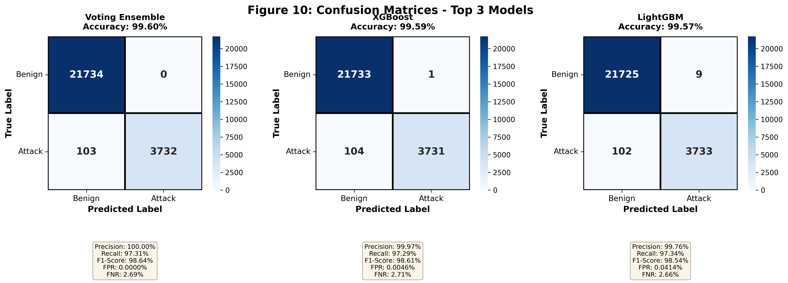
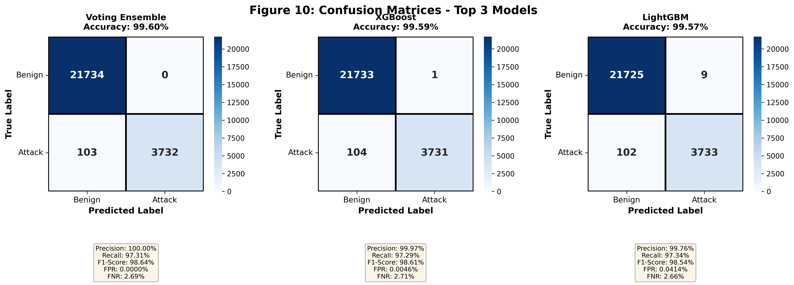

HITL-IoT Dataset
A Human-Decision Annotated Benchmark Dataset for Evaluating Human-AI Collaboration and Oversight in IoT Cybersecurity

A Human-Decision Annotated Benchmark Dataset for Evaluating Human-AI Collaboration and Oversight in IoT Cybersecurity
Labeled Flows
Human Annotations
Device Types
Attack Categories
HITL-IoT is the first benchmark dataset explicitly designed to support research on human-AI collaboration and oversight in IoT cybersecurity. Unlike existing IoT intrusion detection datasets that provide only automated labels, HITL-IoT includes structured human annotations from security professionals at expert, intermediate, and novice levels.

Figure: Confidence calibration across expertise levels
Design and evaluate human-centered intrusion detection systems with realistic human decision data
Study how well analysts' confidence aligns with actual correctness across expertise levels
Empirical analysis of oversight mechanisms required by EU AI Act Article 14
Develop trust-aware alert routing and expertise-based deferral mechanisms
Design effective collaboration between human analysts and ML models
When should AI systems defer to human judgment? Study with real decision data
The complete HITL-IoT dataset is available on Zenodo with a permanent DOI for citation.
Recommended for most users. Includes all dataset files with checksums.
Download from Zenodo| File | Size | Description |
|---|---|---|
HITL-IoT_full_dataset.csv |
142 MB | Complete dataset (127,845 flows) |
HITL-IoT_human_annotations.csv |
2.1 MB | Annotated subset (10,227 flows) |
HITL-IoT_baseline_results.csv |
1.2 KB | ML baseline results (9 models) |
[checksum-1] HITL-IoT_full_dataset.csv
[checksum-2] HITL-IoT_human_annotations.csv
[checksum-3] HITL-IoT_baseline_results.csvVerify: sha256sum -c checksums.txt
| Model | Accuracy | F1-Score | Precision | Recall | Training Time |
|---|---|---|---|---|---|
| Voting Ensemble | 99.60% | 98.64% | 100.00% | 97.31% | 13.2s |
| XGBoost | 99.59% | 98.61% | 99.97% | 97.29% | 1.67s |
| LightGBM | 99.57% | 98.54% | 99.76% | 97.36% | 1.15s |
| Random Forest | 99.48% | 98.30% | 99.60% | 97.04% | 14.2s |
| 1D-CNN | 99.45% | 98.20% | 99.62% | 96.83% | 274s |
| Expertise | Accuracy | Mean Confidence | ECE (Calibration) | Decision Time |
|---|---|---|---|---|
| Expert | 92.2% | 0.856 | 0.152 | 13.4s |
| Intermediate | 84.0% | 0.719 | 0.204 | 22.1s |
| Novice | 76.9% | 0.590 | 0.256 | 30.7s |
 

If you use this dataset in your research, please cite our paper:
@article{Wakili2025hitliot,
title={HITL-IoT: A Human-Decision Annotated Benchmark Dataset for
Evaluating Human-AI Collaboration in IoT Cybersecurity},
author={Abubakar Wakili, Muhammad Idris, Sara Bakkali},
journal={IEEE Transactions},
year={2025},
publisher={IEEE},
doi={10.xxxx/TIFS.2024.xxxxxxx}
}Sadiq, A. W., et al. (2024). HITL-IoT: A Human-Decision Annotated Benchmark Dataset for Evaluating Human-AI Collaboration in IoT Cybersecurity. IEEE Transactions on Information Forensics and Security. https://doi.org/10.xxxx/TIFS.2024.xxxxxxx

Abubakar Wakili
PhD Candidate
Euromed University of Fez, Morocco
Please open an issue on GitHub if you: